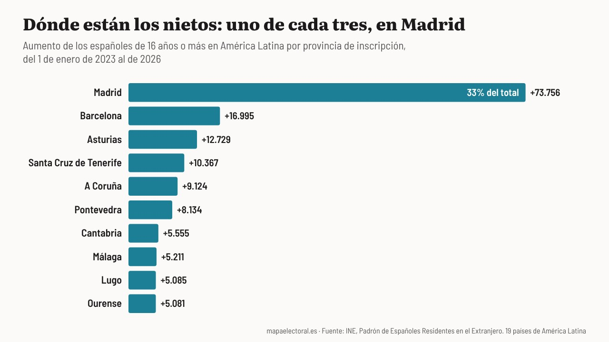

Actualidad · Nietos sin papeleta · España
El Constitucional deja sin voto a los nietos: los españoles adultos de América Latina crecen casi cinco veces más rápido y uno de cada tres está inscrito en Madrid
Desde 2023 hay 259.711 españoles más en América nacidos allí. México manda a Madrid el 58% de los suyos; Cuba, a Canarias la mitad; Uruguay, a Galicia. En Ourense, el 31% del censo ya vive fuera.
Por Nacho G. del Álamo ·

Cada párrafo lleva una etiqueta: dato (cifra comprobable con las fuentes), patrón (relación que se repite, sin afirmar la causa), hipótesis (explicación posible, sin dos fuentes independientes) o contexto (hechos y declaraciones publicados por otros, enlazados). Cómo verificamos
ContextoEn Avión, en Ourense, viven 1.719 personas. En el extranjero hay 3.442 inscritas en el municipio, el doble, según contaba en julio El Correo Gallego. Es el ejemplo más conocido de los pueblos gallegos que tienen más vecinos fuera que dentro. Muchos de los de fuera no han pisado nunca Avión. Están en Buenos Aires, en Montevideo o en México, y algunos acaban de conseguir el pasaporte gracias a sus abuelos.
ContextoAyer, el Tribunal Constitucional les cerró otra puerta. Por diez votos a dos, no admitió el recurso del Defensor del Pueblo, Ángel Gabilondo, contra la suspensión que dejó sin voto el 29N a 163.020 nacionalizados por la ley de nietos. Lo consideró prematuro, porque el caso sigue abierto en el Supremo, según Infobae y El Independiente. No entró en el fondo.
ContextoLa ley de Memoria Democrática abrió en 2022 la nacionalidad a hijos y nietos de exiliados y emigrantes. El plazo terminó el 22 de octubre de 2025. Entre solicitudes y citas pedidas en plazo, casi 2,5 millones de personas, según Maldita.es. A 23 de junio de 2026 se habían aprobado 490.431 expedientes y 255.163 personas estaban ya inscritas en un registro consular.
ContextoNi el Gobierno ni el INE han dicho dónde están, ni en qué provincia votarían. Pero el INE publica el padrón de españoles en el extranjero por país y lugar de nacimiento, y por provincia de inscripción. Comparo, a sabiendas de que no todo el que aparece ahí es un nieto, cómo ha cambiado desde enero de 2023, cuando las nacionalidades de la ley empezaron a llegar.
Un salto que no estaba
DatoEl 1 de enero de 2023 vivían en América 1.197.883 españoles nacidos en el país donde residen. El 1 de enero de 2026 eran 1.457.594: 259.711 más en tres años. En los dos años anteriores habían crecido 52.442, unos 26.000 al año. En 2025 crecieron 110.407.
DatoArgentina es de donde más llegan: 72.750 españoles más nacidos allí, de 389.292 a 462.042. Luego, México (56.278 más) y Cuba (20.670). En México el número ha crecido un 44% en tres años. En Uruguay, donde en los dos años anteriores apenas se había movido, 11.502 más.
Ver la tabla
HipótesisNo todo ese aumento es la ley. Hay hijos de españoles que nacen fuera, y nacionalidades por otras vías, como muestran Estados Unidos o Francia, que también crecen. Pero el salto empieza justo en 2023, se concentra en los países de la vieja emigración y el exilio, y su tamaño encaja con los 255.163 inscritos de junio.
Dónde votarían
ContextoQuien nunca ha vivido en España se inscribe para votar en el municipio de «mayor arraigo, propio o de alguno de sus ascendientes», según la ley electoral. Si no se puede acreditar ninguno, «automáticamente pasa a ejercer el voto en Madrid, como capital y comunidad uniprovincial», según la información de Europa Press que publicó El Independiente en julio, cuando la Junta Electoral Central pidió criterios más claros para fijarlo.
DatoEl padrón no separa a los adultos por lugar de nacimiento, pero sí por provincia. En los 19 países de América Latina, los españoles de 16 años o más crecieron en 220.758 desde enero de 2023. De ellos, 73.756 están inscritos en Madrid: uno de cada tres. Siguen Barcelona (16.995), Asturias (12.729), Santa Cruz de Tenerife (10.367), A Coruña (9.124) y Pontevedra (8.134). Las cuatro provincias gallegas suman 27.424, el 12%.
Ver todas las provincias
PatrónMadrid ya era el destino principal antes de la ley. Entre 2019 y 2023, los adultos españoles en América Latina crecían unos 15.600 al año, y casi la mitad, el 46%, en Madrid. Desde 2023 crecen unos 73.600 al año, casi cinco veces más, y Madrid se lleva el 33%. El resto se ha repartido por las provincias de donde salieron los abuelos: Asturias, Galicia, Cantabria, León, Canarias.
Cada país, su provincia
DatoCada país manda a sus nietos a un sitio distinto. De los 50.067 adultos españoles más que hay en México, el 58% está inscrito en Madrid, y otro 10% en Asturias. De los 17.516 de Cuba, la mitad están en Canarias: el 33% en Santa Cruz de Tenerife y el 16% en Las Palmas. Uruguay mira a Galicia: el 25% en A Coruña y el 14% en Pontevedra. Venezuela se reparte entre Madrid (44%) y Tenerife (33%). Argentina, la que más aporta, es la más repartida: solo el 12% va a Madrid.
HipótesisLos datos no dicen por qué México va a Madrid. Puede ser el exilio republicano de 1939, que tuvo en México su gran destino, o la regla que envía a Madrid a quien no acredita otro arraigo. Las dos cosas a la vez también caben. Con el padrón no se pueden separar.
DatoLo que pesa más en unas provincias que en otras es la proporción. En Madrid, el aumento equivale a 1,5 adultos por cada 100 electores que viven en la provincia. En Ourense, a 2,0, y en Lugo, a 1,9. Son las dos provincias donde más pesa ya el voto de fuera: según el INE, el 30,8% del censo de Ourense para el 29N vive en el extranjero, y el 22,6% del de Lugo. En Madrid, el 9%.
Lo que dicen
ContextoCelia Otero, historiadora nacida en Dozón (Pontevedra) y residente en Buenos Aires, explicaba en julio a El Correo Gallego por qué hay tantas solicitudes:
«La demanda es enorme, no porque todos queramos otro pasaporte»
«Somos gallegos y poseemos el derecho que les fue robado a nuestros padres a votar»
ContextoEn el mismo reportaje, el historiador Ruy Farías, nacido en Buenos Aires y descendiente de gallegos, describía la nacionalidad como «una cuestión fundamental si hay alguna expectativa de retornar». Alberto Núñez Feijóo la ve de otra forma. En una entrevista en esRadio, dijo que la ley de nietos «es ingeniería electoral, interés en conseguir nuevos votantes». Hace casi veinte años, en Argentina, Feijóo pedía lo contrario, como recordó Maldita.es:
«La nacionalidad corresponde a todos los nietos, con independencia de si sus abuelos llegaron del exilio o como consecuencia de una situación económica»
HipótesisNada de esto dice cómo votarían. En 2023 el voto exterior no se pareció tanto al de dentro como se suele pensar, y su participación fue del 9%, como conté en la pieza sobre el escaño de Madrid. Tampoco se sabe cuántos de los 163.020 suspendidos hay en cada provincia: el padrón cuenta residentes, no electores, y mide a 1 de enero.
DatoLo que sí dicen los datos es dónde está el peso. Uno de cada tres nuevos españoles adultos de América Latina está inscrito en Madrid, la provincia donde el voto exterior ya cambió un escaño en 2023. Y en Avión seguirá habiendo más electores fuera que dentro. El 29N, los nietos que esperaban votar por primera vez desde Buenos Aires o Montevideo se quedarán mirando la papeleta de un pueblo que muchos no conocen.
Explora el mapa por sección · Más piezas: El Supremo, la ley de nietos y el escaño de Madrid · Pensiones y censo
Método y fuentes
- Qué se compara
- Los españoles residentes en el extranjero nacidos en su país de residencia, por país, entre el 1 de enero de 2021 y el de 2026, y los de 16 años o más residentes en 19 países de América Latina por provincia de inscripción, entre 2019 y 2026. Con el censo electoral de residentes en el extranjero de las generales del 29N por provincia.
- Límites
- El padrón de españoles en el extranjero cuenta residentes inscritos en los consulados a 1 de enero, no electores ni nacionalizados por la ley de nietos: su aumento incluye también nacimientos y nacionalidades por otras vías. Los adultos son los de 16 años o más, porque el INE agrupa así las edades por provincia. No hay datos públicos de cuántos de los 163.020 suspendidos hay en cada provincia ni de cómo votarían. Las explicaciones del reparto por provincias son hipótesis.
- Cómo se calcula
- Porcentajes sobre votos a candidaturas, salvo la participación, que es sobre el censo. Cifras reproducibles con los scripts del expediente de la pieza. Metodología de Actualidad · Metodología del Atlas
- Fuentes
- INE, Padrón de Españoles Residentes en el Extranjero, población por país de residencia y lugar de nacimiento
- INE, Padrón de Españoles Residentes en el Extranjero, población por país de residencia y provincia de inscripción
- INE, Elecciones a Cortes Generales de 29 de noviembre de 2026, nota de prensa (9-10-2026)
- Infobae, El Constitucional rechaza el recurso del Defensor del Pueblo (21-10-2026)
- El Independiente, El Constitucional inadmite el recurso de Gabilondo (21-10-2026)
- Maldita.es, La nacionalización a través de la «Ley de Nietos» y su derecho a voto (16-10-2026)
- Europa Press en El Independiente, La Junta Electoral y la provincia de voto de la ley de nietos (16-7-2026)
- El Correo Gallego, La ley de nietos dispara la diáspora con derecho a voto (13-7-2026)
- Maldita.es, Cuando Feijóo defendía que los hijos y nietos de españoles en el extranjero tenían derecho a la nacionalidad (30-6-2026)
- Autoría
- Nacho G. del Álamo
- Revisión de datos y texto
- Nacho G. del Álamo, 22 de octubre de 2026
- Publicado · actualizado
- 22 de octubre de 2026 · 22 de octubre de 2026
- Correcciones
- Ninguna.
Serie «Camino al 29N»: 67 piezas
- Del 12% al 2,9% y de vuelta al 9,5%: el nacionalismo gallego que deja Beiras
- La Barcelona que tendría que reconquistar Colau: los comuns ganaban en 837 secciones y ahora en 23
- El 29N repite mes con mal recuerdo: el último noviembre dejó la participación más baja de la democracia
- Con Puigdemont de candidato, Junts duplica su voto: del 11% en el Congreso al 22% en el Parlament
- Sumados, ERC y los comuns habrían sido la lista más votada en 1.431 secciones de Cataluña en 2023; por separado, en 232
- Andalucía vota casi diez puntos más al PSOE cuando elige al Gobierno que cuando elige a la Junta
- La huelga del 11N apela a los barrios que menos votan: donde más paro hay, la participación cae al 61%
- En Madrid, el PSOE saca diez puntos más cuando se vota al Gobierno que cuando se vota al alcalde
- El espacio a la izquierda del PSOE fue el más votado en 9.810 secciones en 2015; en 2023, en 182
- Vox saca casi lo mismo donde uno de cada tres vecinos nació fuera que donde casi nadie lo hizo
- Tras el saludo gélido de Sánchez en el 12‑O: en Madrid, el PP de Almeida sacó más votos que el de Feijóo, con 85.000 votantes menos
- La aceituna de mesa, por debajo de coste: en sus dos grandes comarcas, el PP no ganó en ninguno de los 23 pueblos en 2023
- Qué provincias pueden decidir el 29N: en 17, el último escaño se resolvió en 2023 por menos de 5.000 votos
- Dónde puede costar más la división a la izquierda: en ocho provincias, Sumar ganó o perdió un escaño en 2023 por menos de 5.000 votos
- Vivienda, inmigración y economía: en el CIS de octubre la vivienda salta del 37,5% al 55,7% y ya es el problema más citado por los votantes de PP, PSOE y Sumar
- Abascal promete pagar las pensiones «como sea», pero Vox saca su peor resultado en los barrios más envejecidos: 9,8%, frente al 16,2% en los más jóvenes
- EAPN presenta su informe sobre pobreza y territorio: en los barrios más pobres se vota 15 puntos menos que en los más ricos, el doble de distancia que en 2004
- Once ministros en las listas del PSOE: con los votos de 2023, el puesto más ajustado es el de Ana Redondo en Valladolid, que caería si el PSOE perdiera el 17% de sus votos
- Ciudadanos se suma a Democracia 21 en Madrid y Barcelona: en los barrios madrileños donde Cs fue más fuerte en 2019, el PP pasó del 18,2% al 49,2% en 2023
- El CEO da a Aliança Catalana hasta 25 escaños: en el Parlament de 2024 sacó el 3,8%, pero el 24,9% en el Ripollès y el 7,8% en los pueblos de menos de 1.000 electores
- Cómo votó tu calle: una de cada cuatro secciones censales eligió en 2023 un ganador distinto al de su municipio
- La calle que parte el voto: el PP sacó el 55,9% a un lado de la avenida de Francia, en València, y el 16,4% al otro
- Madrid llega al 29N teñida de azul: el PP ganó en 1.603 de sus 2.450 secciones y el PSOE solo resiste en cuatro distritos del sur
- Barcelona pasó del amarillo al rojo: ERC ganó en 563 secciones en 2019 y en ninguna en 2023
- València borró a Compromís del mapa: ganaba en 101 secciones en 2019 y en 15 en 2023
- Sevilla tiene dos mapas: el PP ganó en votos el 23J, pero el PSOE fue el primero en 286 de sus 521 secciones
- Zaragoza, empate barrio a barrio: el PSOE ganó en 250 secciones y el PP en 245, y 53 se decidieron por menos de dos puntos
- En Málaga, la renta decide quién vota: el 46,7% en los barrios más pobres y el 80,6% en los más ricos
- Murcia, de verde a azul: Vox ganó en 164 secciones en 2019 y en una en 2023
- Palma, la gran ciudad que menos vota: el 62,5% en 2023, y menos del 35% en algunas secciones del este
- Montse Mínguez dimite y deja la lista de Lleida: el PSC duplicó allí su voto en 2023 y le ganó el cuarto diputado al PP por unos 3.500 votos
- El Rey visita las dos ciudades que menos votan: en Melilla votó el 49,8% en 2023, y en una sección de la periferia, el 19%
- El Senado de 2023: 120 senadores para el PP con un tercio de los votos
- Un diputado cuesta 25.300 votos en Teruel y 97.500 en Madrid: el precio del escaño, provincia a provincia
- 1,9 millones de votos no eligieron a nadie en 2023: en Teruel, Lleida y Soria, uno de cada tres
- Feijóo y Sánchez chocan por las pensiones en un censo con 10,2 millones de electores de 65 años o más: superan a los de 18 a 34 en 49 de las 52 provincias
- El CIS de Tezanos da al PSOE 11,8 puntos de ventaja: en las tres generales desde 2019 sobrestimó su margen sobre el PP entre 1 y 6,9 puntos
- Rufián admite «He fracasado»: con los votos de 2023, ERC y Sumar juntos habrían sacado un solo diputado más en Cataluña, y por 126 votos
- Ocupación: en las provincias con más demandas ante los juzgados, Vox sacó el 15,9% en 2023, frente al 11,5% en las que menos
- Frente Amplio y Podemos solo irán juntos en cinco provincias: en las otras 47, Sumar sacó 26 de sus 31 diputados en 2023
- El Supremo deja sin voto a 163.020 nacionalizados por la ley de nietos: en 2023, el voto exterior ya le dio al PP un escaño del PSOE en Madrid
- PSOE y Frente Amplio, juntos al Senado: con los votos de 2023, su lista habría ganado al PP en 17 provincias donde este sacó tres senadores
- Albiol, cabeza de lista del PP por Barcelona: en Badalona sacó el 55,7% en las municipales de 2023 y dos meses después el PP se quedó en el 16,6%
- Dimite la lista del PSOE en Palencia tras imponer Ferraz a Martínez Seijo: en 2023 al partido le faltaron 7.097 votos para un segundo diputado
- Nueva Canarias, Podemos, IU y Sumar se unen en Canarias: con los votos de 2023, la suma habría pasado de uno a tres diputados
- Separados el 29N, como en 2015: con los votos de aquel año, una sola papeleta de Podemos e IU habría sacado 86 diputados, no 71
- Delgado contra Montero en Madrid: con los votos de 2023, Podemos necesitaría uno de cada cinco votos de Sumar para sacar escaño
- PP y Vox negocian el Senado: con los votos de 2023, sumar a Vox le devolvería a la derecha 19 provincias frente a la lista de PSOE y Frente Amplio
- Trump dice que España fue «invadida»: los vecinos nacidos fuera pasaron de 6,5 a 10 millones en siete años, y donde más crecieron Vox no sacó más votos
- Feijóo y Saiz se pelean por la hucha de las pensiones: donde más pesan en la renta, PP y PSOE se llevaron el 72,8% del voto, casi diez puntos más que donde menos
- Abascal llama a Galicia «espina clavada»: Vox no llegó al 5% en seis de cada diez secciones gallegas en 2023, y en el resto de España, en una de cada nueve
- El 29N deja en el aire la subida de tres millones de empleados públicos: en Teruel o Soria hay el doble por habitante que en Barcelona, y donde más pesan, Sumar sacó un tercio menos
- Estás aquíEl Constitucional deja sin voto a los nietos: los españoles adultos de América Latina crecen casi cinco veces más rápido y uno de cada tres está inscrito en Madrid
- En los barrios con más autónomos, el PP saca 13 puntos al PSOE
- Seis escaños que se decidieron por menos de mil votantes
- Vox nunca ha llegado al 12% en los barrios de jubilados
- Donde abundan los despachos, el PP saca siete puntos más y el PSOE, cinco menos
- Donde más preocupa la vivienda, más se votó a Sumar
- La inmigración preocupa más, salvo a los votantes de Vox
- Donde más preocupa la inmigración, más votó Vox, salvo en Cataluña
- En los barrios de rentistas, el PP saca el 51% y el PSOE, el 21%
- El PP ya gana a Junts en seis de cada diez barrios catalanes
- A seis semanas del 29N: en 534 barrios de España no votó ni la mitad del censo, y tres de cada cuatro están entre los más pobres
- Ante el 29N: del Polígono Sur a la Cañada Real, en 78 de los 93 barrios donde más pesan las ayudas sociales no votó ni la mitad
- Con el PSOE andaluz en mínimos: Sevilla, Jerez y otros 170 municipios que votaron a la izquierda en todas las generales de 1977 a 2008 dieron en 2023 más votos a PP y Vox
- A cinco semanas del 29N: en la calle de los Hermanos García Noblejas, en Madrid, PP y PSOE se cambian de acera 12 veces, y el PP siempre gana en el lado con más renta
- Vox busca el voto de los barrios obreros: en la Región de Murcia, nueve de cada diez secciones pobres ya votan más a PP y Vox que a PSOE y Sumar
Más datos: elecciones generales del 29N de 2026: fecha y escaños por provincia.
Sigue leyendo
- EncuestasEncuestas de las elecciones generales del 29N: todas, con sus escaños, actualizadas cada día
- Ganar en una solaEl BNG solo ganó en una sección de España: los 5 pueblos donde más le votan, de Vilar de Santos a Allariz (y los de Ourense donde no llega al 2%)
- El pueblo de PuigdemontLos 5 pueblos donde Junts saca más del 40% de los votos: encabeza Amer, el de Puigdemont (y los barrios del área de Barcelona donde no tuvo ni un voto)
- De 734 a 42Los 5 pueblos donde ERC saca más del 35% de los votos: Blancafort, Flix y Tortosa (y el barrio de Tarragona donde no tuvo ni un voto)
- ActualidadTodas las piezas de actualidad
- AtlasAtlas de las anomalías electorales